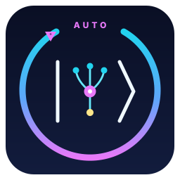
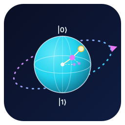
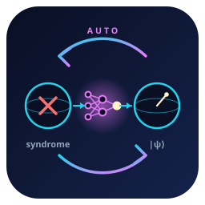

Three concepts — same palette (deep quantum blue + cyan + magenta). Pick one.

The auto-loop is now the dominant shape — a thick 300° refresh arrow with a chunky magenta arrowhead and a faint dashed "motion trail" just past the opening; "AUTO" sits in the gap at top. Inside, a minimal |ψ⟩: the ψ reads as both the Greek letter and a neural graph (3 cyan inputs → magenta hub decoder → yellow output). Noise removed.

Unambiguously quantum — Bloch sphere with labelled |0⟩/|1⟩ poles — but the state vector is rendered as a neural path (nodes + dashed side-branches), i.e. "the AI decoder's belief about the qubit state." A dashed tilted orbital ring with an arrowhead represents the auto-research loop running around the physics.

Shows the entire AutoQEC pipeline: a left qubit with a red X error (the syndrome) → a central neural decoder → a right qubit with a clean state vector |ψ⟩. A closed cyan→magenta loop around them with two arrowheads makes the autonomous round cycle explicit. Most narrative; reads like a one-glance spec.